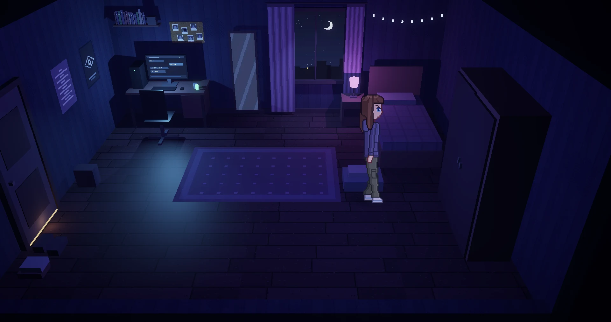
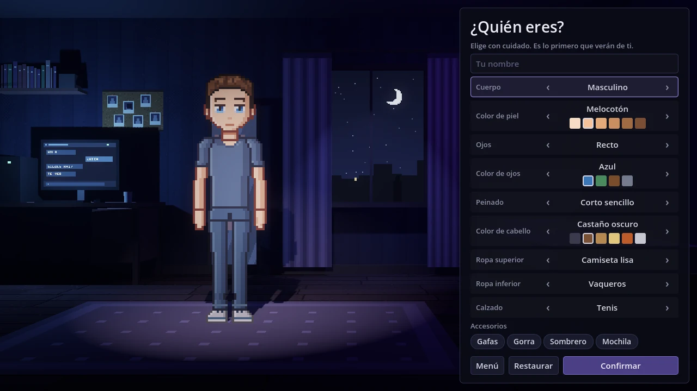

Administra tu tiempo
Reparte tus acciones entre la mañana, la tarde y la noche. Investigar una pista o hablar con alguien son formas distintas de usar el tiempo que tienes.

SUSPENSO NARRATIVO EN PIXEL ART
Todo empieza con un mensaje.
Un perfil desconocido te escribe. En tres días, lo que decidas compartir, investigar u ocultar puede cambiar el final de tu historia.
HABITACIÓN DEL PROTAGONISTA
LA HISTORIA
En casa y en la escuela, todo parece seguir su curso. Al llegar a la computadora, una solicitud de seguimiento se convierte en una conversación. Lo que empieza como un gesto de amistad pronto se vuelve presión para compartir datos y guardar secretos.
Puedes cortar el contacto, hablar con tu mamá o investigar el perfil y reunir pruebas. Lo que hagas durante esos tres días influye en las opciones que tendrás al final.

JUGABILIDAD
Reparte tus acciones entre la mañana, la tarde y la noche. Investigar una pista o hablar con alguien son formas distintas de usar el tiempo que tienes.
Investiga un perfil sospechoso y decide cuándo pedir ayuda. Tus elecciones afectan la privacidad, el riesgo y la confianza familiar.
Prueba los minijuegos de clase y entra a Sombra Señal desde la computadora. Allí tendrás que recuperar señales y esquivar a una sombra. Puedes jugar con o sin susto.
EN DESARROLLO
La descarga se habilitará cuando el juego esté listo.
Un juego de Lotus Games que explora la manipulación en redes sociales y el valor de pedir ayuda. Proyecto académico de Ingeniería de Sistemas de la Universidad del Norte, desarrollado en Godot.